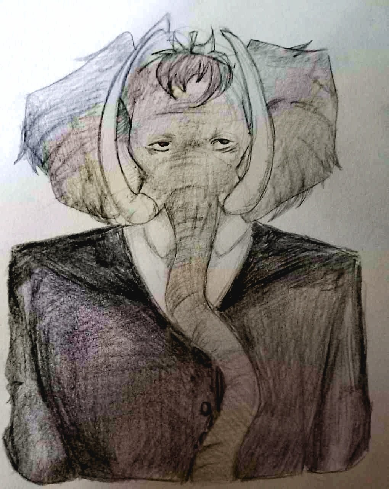
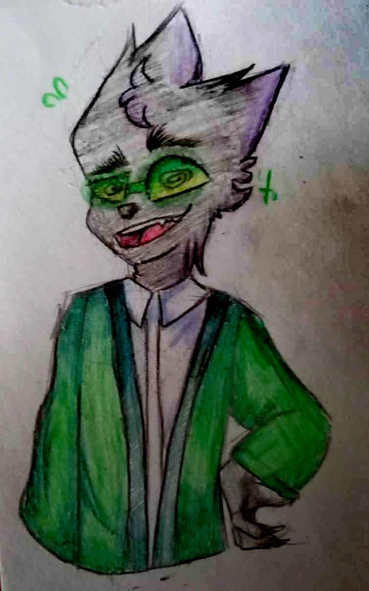
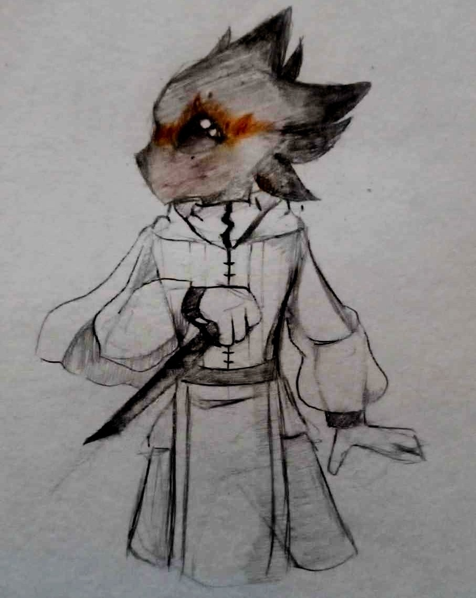
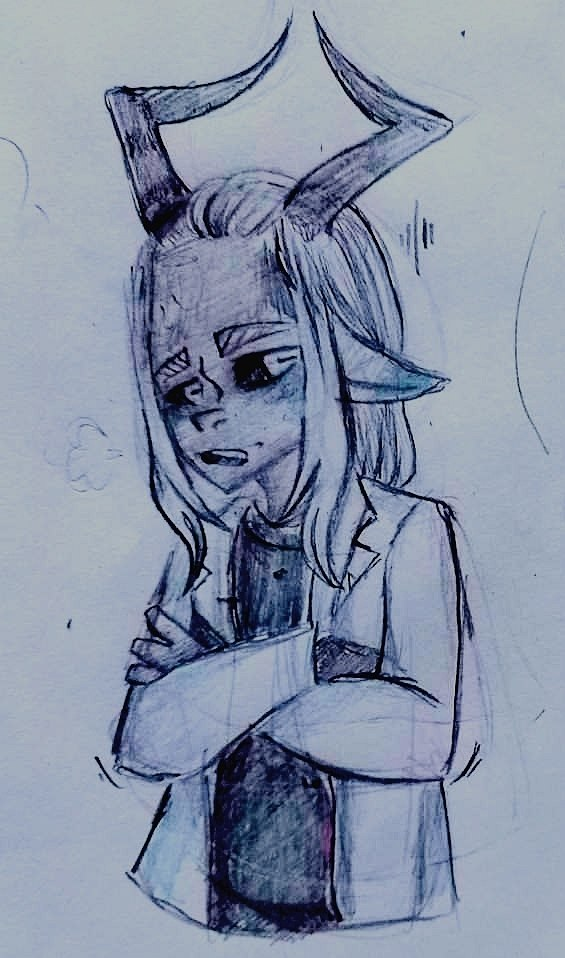
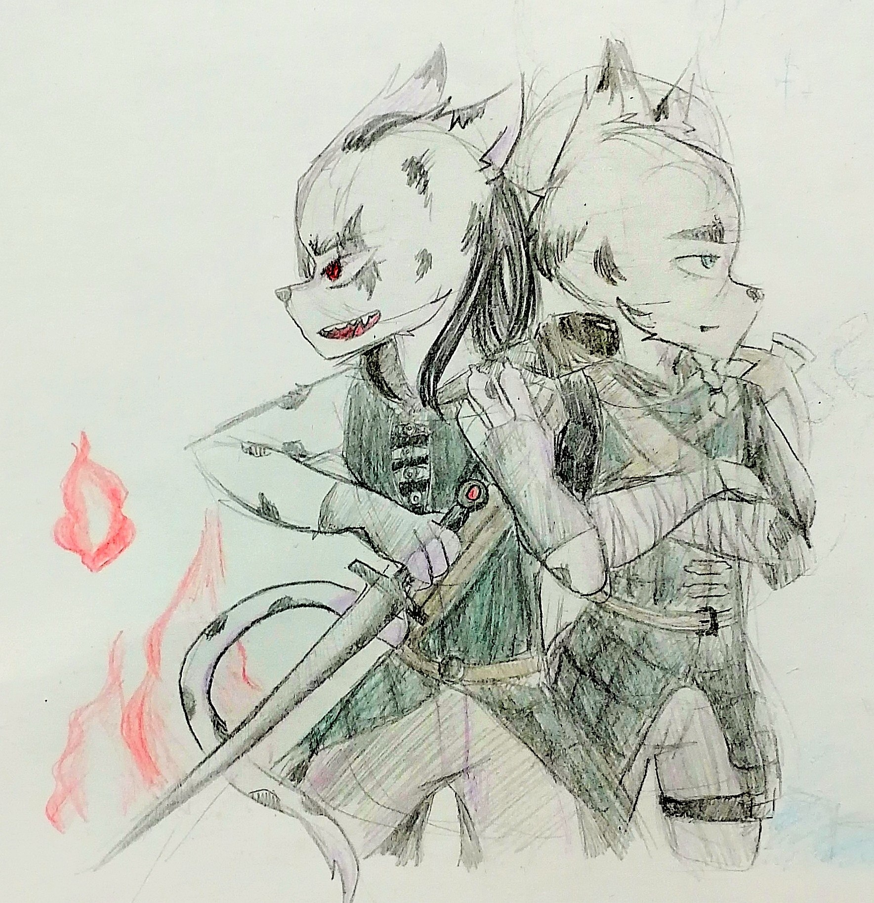

Aldheim - Fraud or Fiction?

Aldheim is a web-novel written by B. Wulf and Shinobi, to whom most of the illustrations are attributed. Despite Shinobi being listed as the author of some chapters, B. Wulf's supervision and modification of Shinobi's chapters leaves B. Wulf to blame for most of the series's shortcomings.
While B. Wulf seems to attempt to write original content, a lot of the characters or plot points are either blatant rip-offs of popular anime, books, and even RPGs, or fall short of being interesting or engaging in any meaningful way. Protagonists come and go, having no real development or distinctive traits, leaving them quite shallow.
Around 30% of the chapters are written by Shinobi. Those are the best ones, despite being "translated and adapted by Beonicwulf". They mostly follow the misadventures of a single protagonist, unlike the rest of the series, which rapidly swings from one unresolved plotline to another.
Chapters vary wildly in quality, style, and length. One of them is a 2100+ word masterpiece, another is under 300 words, and still feels like filler. The best parts of the series - the first-person tea-time stories and Varu's captivating storyline - are needlessly mixed together and further muddled by other plotlines.
Sometimes I get a little bit scared at night
I get a little preoccupied
The sirens in my mind, the sirens in my mind
I just wanna be good again
I wanna make it to the end
The sirens in my mind, the sirens in my mind
The Burrow - Comfort & Irony

It all begins with Kron pouring the reader some tea. While the first few chapters are very short and static, they do something unique - they place the reader in Kron's burrow, and create a cozy atmosphere while he tells his stories. This, perhaps, is Aldheim's strength - immersing the reader into its world.
The burrow represents a welcoming and cozy place that attempts to gain the reader's attention not through action or flare, but through calm and comfort. The underlying humour and nods to philosophical dilemmas are what make these first few chapters so entertaining, despite the lack of action or tension.
What happens when an unstoppable force meets an immovable object? The first chapter provides a simple and clean answer: both shatter. It is an ironic twist that subverts expectations, showing that a simple solution is often the most satisfying.
The second chapter treats an inanimate object - a watchtower - as if it were sentient, going as far as charging it for murder and ordering its execution. Ironically, its destruction leads to more casualties. It's this absurdism and irony that make Aldheim different and unique
The third chapter, once again, deals in irony. Kron, who prides himself on his storytelling and accurate recounting of past events, comes face to face with an unreliable narrator, who embellishes his stories and makes it seem as if he's the hero. The Grotusk calls him out on his lies and points out inconsistencies that undermine his story.
Disturbing the peace
Look into my eyes
Now tell me the things
You blabbing about behind my back
The tenacity
I hold it's hard to break down
It's too late for apologies
It's going down now
The Brilliance of Varu

The third chapter introduces us to Varu, who is one of Shinobi's OCs (original character), despite his first appearance being B. Wulf's chapter. He recounts his most recent heroic endeavour, and is constantly interrupted by Kron, who points out falsehoods within the Brisk's unreliable narration.
Varu's next appearance is in Shinobi's first chapter of Aldheim - The Charlatan. This chapter introduces a new character, Oxie, and a new hub location - Oxie's Spinel Auger Tavern. Here we witness two of Shinobi's greatest strengths - 3-dimensional characters that feel alive, and meaningful, witty dialogue.
Over the course of Varu's storyline, another important character, Al Ryan, is introduced, and their dynamic slowly unravels. Al's sadism and manipulations further add to the Brisk's already numerous misfortunes, as they fumble and get captured by Oxie and, her friend and colleague, Bask.
In a sick twist, it is revealed that Al maintains power over Varu through the involvement of a mysterious medallion that somehow binds their fates together. The later chapters follow Varu in his search of identity and his quest to break free of Al's control, as he meets Ving and Ordon, two more examples of Shinobi's excellent character design, before confronting Al.
You want a piece of me? You'll make it
You want to hit me, then you're satisfied
I'm gonna fall, I'm gonna fake it
Now I will make you think you've won again
I've fallen down, my nose bleeding badly
I'm where you want me
The Problems of a Passive Protagonist

Chapter 4, "The Slayer", introduces Henry - a raptor who was exiled from his tribe after he was framed for the murder of their chief. He recounts his story to Kron and the reader, and promptly leaves, heading out to see Oxie, which happens in chapter 8, "Spinels & Stones". Through their interaction, it is made clear that they have a shared history, and his passive attitude begins to show itself.
Most events and encounters are not Henry's initiative. He gets framed, he gets ambushed, he is accompanied by the twins, he is confronted by Viggo, he watches Viggo die, he is told by Viggo about the Hydra, he is kidnapped, he is freed, and by pure chance, his identity is stolen by a shapeshifter who sends him into another realm, and then transported back. He's a man of few words... and few actions.
The most egregious example of his uninvolvement in his own story comes in the chapter "The Trial". He returns to his tribe and is met by a friend of his who convinces the others to listen to Henry. Henry simply recounts his side of the story, and he is believed, pardoned, and exiled by the tribe. The so-called trial achieves and changes nothing. The chapter's mere existence actively hurts Henry's already weak storyline.
Inexpresiveness and passiveness are real traits people possess. But they make for a character that feels shallow, and fails to engage the audience. Neither does he undergo character development and become proactive, nor does he have a backstory that makes him relatable. Even the mute Huntress manages to be more expresive and engaging than Henry is throughout his whole story.
In the chapter "Reunion" Henry visits Oxie's inn, The Spinel Auger, accompanied by the twins. This chapter reveals that Henry had a deep history with Oxie and Bask, and that they were part of a group called "The Nightcrawlers" who Henry supposedly abandoned. Bask says that Henry broke Oxie's heart, and in "Spinels & Stones" Oxie mentions not seeing Henry for multiple years.
Much later, it is revealed that Henry is experiencing memory loss due to the Hydra, and that Viggo was his close friend and ally. This, and Henry's fallout with Oxie and Bask, are supposed to be tragedies, but Henry is just not engaging enough of a character, and his tragic story collapses in on itself, leaving behind a shell of a man who lost everything and does almost nothing to get it all back.
If the supposedly tragic and flawed character is complacent, is there a reason to even care about the hardships he waits out, the relationships he neglects, the challenges he doesn't face? The cozy burrow is left behind in favor of Henry's lackluster story, and that's one of Aldheim's biggest weaknesses.
Lord forgive me
I don't wanna go
I swear that I'm good where I'm at
The city trembles
They fear the worst
They need an angel
But I'm still a boy
The Brilliance of Ving

In Shinobi's chapter "The Doctor", a young man named Nobu is bleeding out in the woods before a mysterious hooded and masked figure comes up to him and offers to save him; that's our Doctor right there. The rest of the chapter follows Nobu as he's getting accustomed to his new life as an undead. His undeath is his rebirth, as it sets him on the path of a new life.
The Doctor, Ving, is revealed to be sympathetic and kind beneath his intimidating appearance. Both Nobu and Varu had difficult childhoods and grew up as victims plagued by misfortune. Their time with Ving not only heals them physically, it also seems to give them the resolve to start to take control of their lives and stop being victims.
Shinobi's next chapter, "Guardian of The Forest", introduces us to the titular Guardian of The Forest, Ordon, whom Varu encounters as he wanders into the Silva Ardua, or Wicked Woods. It is there that Varu encounters Ving, after having fallen from a tree and losing his memory. Ironically, Varu's loss of identity is what helps him get a grasp on it once he recovers.
Ving represents hope and the will to fight for one's life and individuality. He comes to the aid of those who are victims to fate and circumstance, and gives them a chance at fighting back, at no longer being a passive observer of their own life. He aids the misfortunate in their moment of weakness, and pushes them to reclaim their own life.
The lights go out, and I can't be saved
Tides that I tried to swim against
Have brought me down upon my knees
Oh, I beg, I beg and plead, singin'
Come out of things unsaid
Shoot an apple off my head, and a
Trouble that can't be named
A tiger's waitin' to be tamed, singin'
Fragrant & Royal
